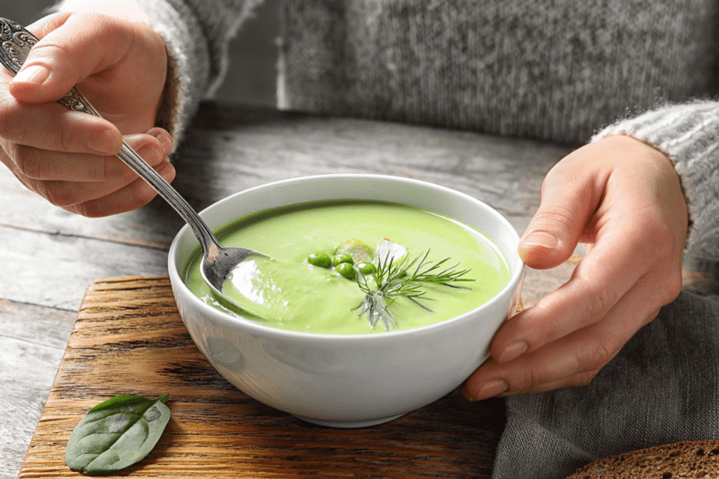
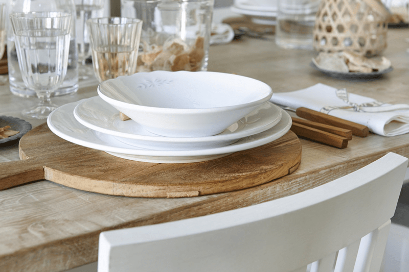

Nourishing and Quick Lunch or Dinner Ideas
Back in the day (spoken in a granny’s cracked voice), family meals were a given. I recall the summer’s that I would spend with my Great Grandparents. They lived in Wahpeton, ND. It was a tiny town where everyone knew everyone’s business. One very unique thing that the city did was to sound a whistle at 8:00 am, 12:00 noon, and at 6:00 pm, throughout the whole town. This alarm rang like church bells for a wedding. I don’t know if they still do this, but they went off like clockwork back in the day.

Not only did these whistles indicate when it was time to eat, but they also sounded alerts for me. As I would head of the house to play, Great Grandma would say, “You be home by the noon whistle!” or, “Don’t be late for dinner, you best be in the house by the dinner whistle.” Breakfast was always more of a chore, a chore to get my food down the hatch as fast as I could so I could go outside to play. Lunchtime was a bit more favorable, as my pace was slowed down just a tad (but there was more playing to be had!), and then there was dinnertime. Dinnertime has for generations been a family’s chance to sit down and break bread together while catching up on the day, and that held true for me. Perhaps it was because I was exhausted from a full day of slaving in the hot sun, making mud pies. lol
There are studies to prove that sitting down as a family to eat meals together creates a better life. But we don’t need a scientific study to know that eating together as a family strengthens the bonds between individual members, contributing to the overall emotional well-being not only of the family unit but of the people in it. But how many of us do that? Perhaps it is time to make a change if you don’t already do this.
Raw Foods = Eating from Scratch = Time Consuming?
Who has the time to create meals from scratch? In this fast-paced world of ours, convenience is the name of the game. Convenient saves time, and while we are on the topic, who then has time to sit, relax, and share the day with loved ones over a plate of food? It seems to be as rare as 8-track tapes! Yea, go ahead a google that but mind you, they were before my time. haha
So, how do we eat whole foods (whether raw or cooked), preparing our foods basically from scratch, and then enjoy them with loved ones? I know that I am supposed to be giving you quick meal ideas, and I will get to that, but first, we must understand the importance of creating dinner habits, thus create dinnertime habits.

Make a Mealtime Pattern
- If at all possible, create a daily time pattern in which you expect the family to come together for dinner. It’s easy to do if you are single or married without children. But even with children, it is easy; it just grows a bit more challenging once they start becoming more independent. Also, be sure to create a designated area to share meals that are free from distraction. Don’t eat with your phone in hand, or the computer in front of you. Be sure to turn off the T.V. You get the point.
Make sure Everyone has a Job
- For mealtimes, assign specific jobs to everyone who is old enough to help: table-setter and clearer, dishwasher loader and unloader, drink pourer, the napkin fetcher, etc. When it’s time to eat, make clear that everyone is expected to help in some way, not just show up at the last minute to fill their plates.
Make Conversation
- Make family mealtimes an opportunity to practice the art of conversation. It can be easy for children to be overlooked, “seen and not heard” during meals as the adults discuss family issues or the news of the day. Inversily it can also be easy for the needs, wants, and behavior of the children to take over the meal. Be sure to impress upon those present that everyone is essential and has a contribution to make. The point is to make sure that at each meal, everyone has the floor at least once to bring up whatever is on his or her mind and to be heard by everyone else.
- Now, let’s get busy looking at some quick dinner ideas! Frankly, there are many ways to look at this. I could easily say to make a quick salad, using all the fresh produce from the fridge, but that’s no fun and can quickly get boring.
The Key to QUICK Dinners
- Be prepared.
- Batch “cooking.”
- Make foods that are dehydrated or ones that can be frozen.
- Make recipes that can be served in many different applications.
Lunch and/or Dinner Meal Ideas (finally Amie Sue! I hear you.)
I currently have over 100 Main & Side Dish recipes (click here). Many of these recipes require prep work, which doesn’t fit the “quick and easy” description. So, instead, I will list out some single food recipes and all the different ways you can enjoy them. One method can be used in several ways throughout the week. Let me give you some ideas. Hopefully, it will provide you with a different “eye” in how you look and use a recipe.
Salad Ideas and How to Enjoy Them
This recipe keeps for about 3-4 days. It is light, fresh, slightly sweet, and filled with veggies. The only equipment needed is a food processor or a box grater. Remember, sweet and savory pair well, so don’t be intimidated to serve it with savory foods.
- Meal ONE – enjoy as a side dish.
- Meal TWO – use as filling in a coconut wrap served with a warm soup.
- Meal THREE – create an open face sandwich, placing a large dollop on top of the bread.
To me, Asian flavors are “warming” and comforting. To make the slaw, you can use a food processor or a sharp knife. Let’s keep it simple!
- Meal ONE – enjoy as a side dish.
- Meal TWO – use as filling in a coconut wrap served with a warm soup.
- Meal THREE – add some cashews and finely julienned kale to build volume, nutrients, and bulk to the recipe, this could turn it into a main meal dish.
I won’t try to pull the wool over your eyes; you have to enjoy broccoli to enjoy this recipe. It’s the main attraction! This recipe is slightly sweet, BUT you can easily omit the raisins and transform it totally into a savory one. Perhaps make it without the raisins, enjoy it as a savory salad, and then come the next day, toss some in to change up the flavor pallet.
- Meal ONE – enjoy as a side dish.
- Meal TWO – use as filling in a coconut wrap or any other wrap.
- Meal THREE – add some fresh zucchini noodles to add substance to transform it into the main meal.
Hungry for Vegan Fish Ideas?
Ok, this is a fun one. You can make this ONE recipe and enjoy so many different ways throughout the week. Just typing this out is making me hungry. If you are new to this whole raw vegan thing, you might be scratching your head on just how the heck are we going to make VEGAN fish… the secret ingredient is kelp powder. All you need to do is make the “fish” recipe and divide it up into meal-sized portions (based on your family size).
- Meal ONE – you can eat the “fish” recipe as is! No shaping or dehydrating involved. It makes for a tasty sandwich filling, load up a celery stalk with it, spread it on crackers, wrap it in nori sheets, or enjoy it one spoonful at a time.
- Meal TWO – Create pattie shapes, dehydrate them, and enjoy a good ole’ crunchy fish sandwich — recipe (here).
- Meal THREE – Use some of the batter to create “fish” sticks! Enjoy with a dipping sauce and a side salad — recipe (here).
- Meal FOUR – use the last portion of the “fish” batter and create “fish” tacos! Recipe (here).
Other components will be needed to complete these meals such as bread, taco shells, and tarter sauce but again, each of those components can be used along with other dishes too… you will naturally be building a surplus of foods to enjoy through the week. To me, this is how you create quick, NOURISHING, meals. Seriously, I could go on forever, showing you how to divide up a recipe or how to doctor them up to transform the flavors. But hopefully, with these few samples, you will start to have creative ideas floating around your head! blessings, amie sue
© AmieSue.com